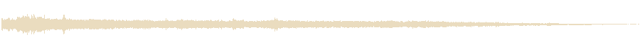
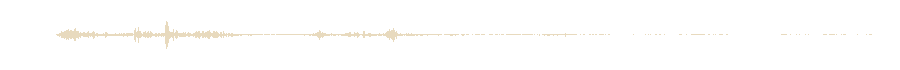
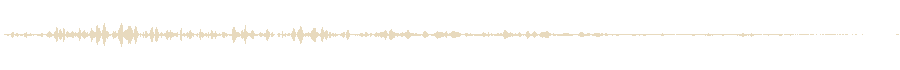
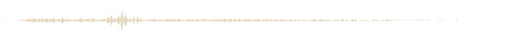
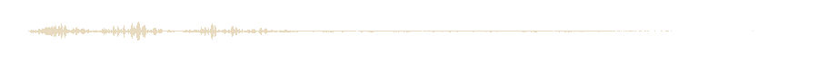

Aujourd'hui : quand le chat enchaîné s'écrase au sol (5,21 s), le jeu joue toujours le même son, I3 « Écrasé », choisi au tour 2.
Ce qui change : à chaque enchaînement, le jeu tire une chute au hasard parmi celles que tu gardes, et la fait varier un peu de hauteur. Mets 👍 à toutes celles à garder (I3 compris si tu veux le garder) : elles entrent toutes dans le tirage.
Sans question : chaque chute est un corps qui tombe, un écrasement mou et des chaînes qui touchent le sol, pris à des sons différents. Même volume que I3. Les autres moments de la scène restent ceux du tour 2. Sons de Freesound, CC0 ou CC BY (crédités).

Squish impact, Bertsz, CC0 ; BodyFall.wav, 000600, CC0 ; chaindrop 1, Logicogonist, CC0

BODY FALL - V HVY - DIRT, leonelmail, CC0 ; Wet Splat 1.mp3, nebulasnails, CC0 ; Steel chain being dropped, ani_music, CC0
Thud / Falling on wooden floor, Breviceps, CC0 ; Tomato squish;wet.wav, HonorHunter, CC0 ; shackles.wav, zaqqazlowell, CC0

Limp Mass Hit Floor, BewareOfTheElmo, CC BY 4.0 ; Cartoon - Splat!, Breviceps, CC0 ; Chain Metal Rattle 01, KVV_Audio, CC BY 4.0

Falling body hits the floor, courtneyeck, CC0 ; Step on a slug (Splat!) 1, Breviceps, CC0 ; Steel chain being dropped and dragged, ani_music, CC0
goblin-fall.mp3, Kneeling, CC0 ; Squish impact, Bertsz, CC0 ; pickingchain.ogg, Kneeling, CC0

Body fall_02.wav, deleted_user_2104797, CC0 ; Wet Splat 1.mp3, nebulasnails, CC0 ; chaindrop 1, Logicogonist, CC0